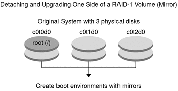
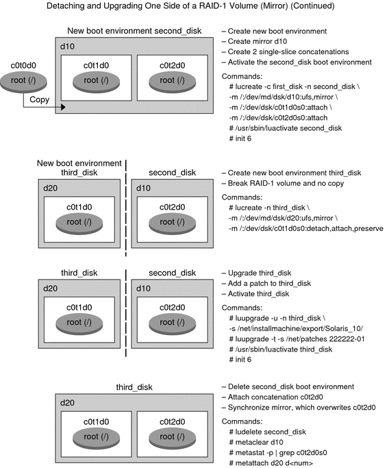

|
|||
|
Part I Upgrading With Solaris Live Upgrade 1. Where to Find Solaris Installation Planning Information 2. Solaris Live Upgrade (Overview) 3. Solaris Live Upgrade (Planning) 4. Using Solaris Live Upgrade to Create a Boot Environment (Tasks) 5. Upgrading With Solaris Live Upgrade (Tasks) 6. Failure Recovery: Falling Back to the Original Boot Environment (Tasks) 7. Maintaining Solaris Live Upgrade Boot Environments (Tasks) 8. x86: Locating the GRUB Menu's menu.lst File (Tasks) 9. Upgrading the Solaris OS on a System With Non-Global Zones Installed 10. Solaris Live Upgrade (Examples) Example of Upgrading With Solaris Live Upgrade Example of Migrating From an Existing Volume to a Solaris Volume Manager RAID-1 Volume Example of Creating an Empty Boot Environment and Installing a Solaris Flash Archive 11. Solaris Live Upgrade (Command Reference) |
Example of Detaching and Upgrading One Side of a RAID-1 Volume (Mirror)This example shows you how to do the following tasks:
Figure 10-1 shows the current boot environment, which contains three physical disks. Figure 10-1 Detaching and Upgrading One Side of a RAID-1 Volume (Mirror)
The new boot environment, third_disk, has been upgraded and is the currently running system. third_disk contains the root (/) file system that is mirrored. Figure 10-2 shows the entire process of detaching a mirror and upgrading the mirror by using the commands in the preceding example. Figure 10-2 Detaching and Upgrading One Side of a RAID-1 Volume (Mirror) (continued) |
||
|